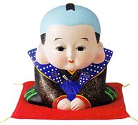
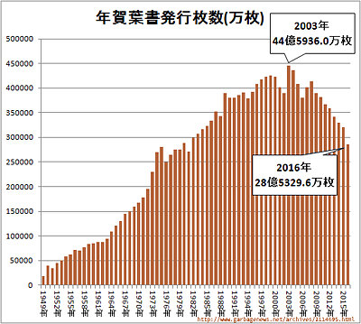
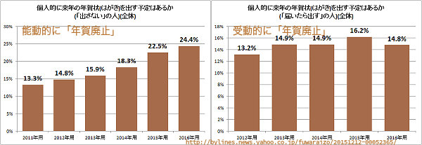
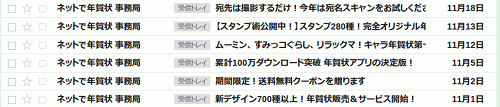
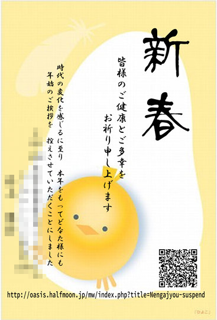

年始のご挨拶を 辞退させていただきます 2016年11月
Last Update

時代の変化を感じるに至り
本年をもってどなた様にも
年始のご挨拶を
控えさせていただくことにしました。
まえがき
毎年、慣習的に出したり受け取ったりしている年賀状。もらって特に嬉しいわけでもなく、発送するのも単に画面上に表示された住所録のチェックボックスをONにしてボタンを押すだけ。これって本当に必要なのだろうか、少しだけ考えてみた。
年賀状を出す人はたしかに減っているようだ
日本郵便が発売している年賀葉書は2016年末、ピークであった2003年に比べて36%減っている[*1][*2]。

また、この調査では年賀状を出さない人や、届いたら出すという消極的な人の割合も調べていて、たとえば最新の2016年では24.4%の人が「年賀状は出さないし、来ても返送しない」、14.8%の人が「年賀状は出さないが、来たら返送する」となっている[*1]。この割合を除いた残りの人が「年賀状を出す」で60.8%となる。

つまり、4割の人は年賀状は出さないし、さらに言えば日本人全体の4分の1の人は礼を失するにもかかわらず「来ても返送しない」というほど迷惑がっているということかもしれない。
年賀状ビジネスの必死さに心が折れた
年末が近づくと、昨年まで2年間利用したオンライン年賀状印刷サイトから、頻繁に宣伝メールが送付されてくるようになった。

ログオンIDの亡失を救ってくれるためだけなら、1〜2回程度リマインダー的にメールがあっても良いとは思うが（それでも、了解もなく勝手にメールを送ってくるのは社会通念上問題）。しかし、数日おきに下らない宣伝メールを受け取ると、もはや心が折れてしまった。
もう、こんな下らないビジネスに乗せられるのはやめよう…
年賀状をやめるご挨拶
ネット検索では『年賀状をやめる場合の、失礼のない辞退の書き方』なるものが多数ヒットする。みなさん、失礼にあたらない文例を求めているのだろう。
わたしも、親戚あて数枚を除き、今年限りで年賀状をやめさせていただきます
時代の変化を感じるに至り、
本年をもってどなた様にも
年始のご挨拶を
控えさせていただくことにしました。
ご理解いただきますよう、よろしくおねがいします

今後、年賀状等はほしくないです
とても困惑いたしますので、年賀状等の挨拶状の受け取りを全て辞退したいのでご理解ご協力のほどよろしくお願いします。また、それらを頂いたとしても、礼状はお送りしませんのであわせてご理解願います。
年賀状受け取り辞退にも関わらず、重ねて送付してきたあなたへ
2016年末に辞退の意思を示す「丁寧なお手紙」を送付したにも関わらず、2018年新春の年賀状などを送付してきた方。もう一度「お知らせ」します。年賀状など「儀礼的なもの」は一切受けとりたくありません。
年賀状だけでなく、「寒中見舞」「暑中見舞」「喪中」「中元」「歳暮」など郵便や宅配便で一方的に送りつけてくる儀礼的な物のやり取りは一切受け取りたくないのでご留意ください。
メール連絡先
メールの連絡先は、こちらです。メールボックスが宣伝メールであふれるようになると、メールアドレスを変更しますので、最新のものをご利用ください。
これまでの年賀状アーカイブ
カラープリンタ出力の年賀状を出すようになって以降のデータを、Googleフォトに格納しています。
2017年1月の年賀状データも作成しましたが、最早心が折れて、印刷しないことにしました。
2017年1月の年賀状になるはずであった原稿
参考文献
- [1] 少しずつ、そして確実に減る「はがきの年賀状」の利用者と枚数
http://bylines.news.yahoo.co.jp/fuwaraizo/20151212-00052365/ - [2] 年賀葉書の発行枚数などをグラフ化してみる(2016年)(最新)
http://www.garbagenews.net/archives/2114695.html